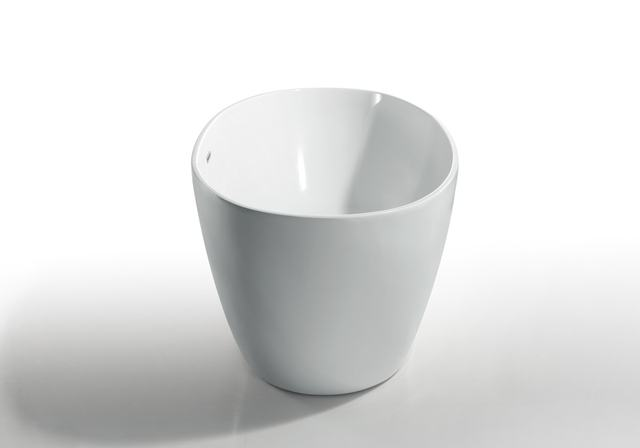
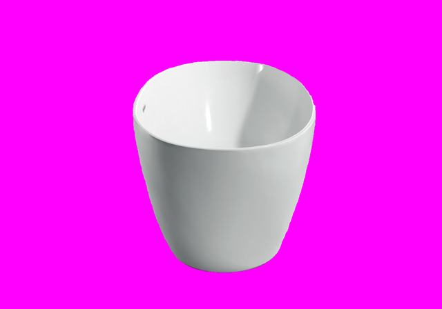
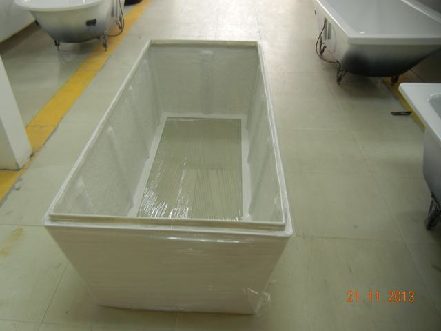
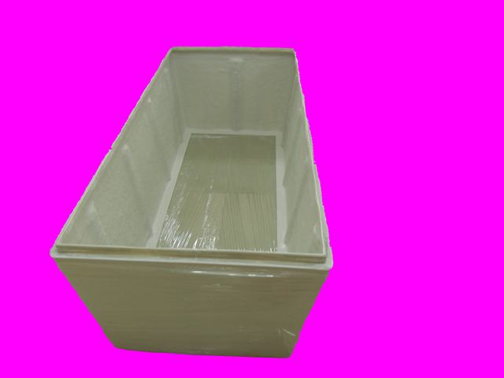

Photo2Tub is a pipeline we built to take 3–8 photos of a bathtub — a customer's own snapshot, a catalog shot, a competitor's product — and reconstruct it as a model you can open and fine-tune in the Design Studio. This page is a plain look at how it works and, just as importantly, where it still needs a person to step in.
An open-vocabulary detector locates the bathtub in each photo even when other tubs or clutter share the frame, then a segmentation model cuts a clean silhouette.
If it matches a known catalog model with enough confidence, we reuse its true dimensions. If it doesn't clearly match anything, we say so instead of guessing.
The cleanest available photo angle gets turned into a real-world top-view outline via perspective correction — the same math the Design Studio itself uses.
Shape, egg profile, base taper and rim height are estimated from multiple photos and combined, not read off a single shot — that combination is what makes the numbers stable.
Everything above becomes one design file — the same format the Design Studio already opens — with a confidence label on every field, not just the shape.
These are two of the actual test photos the pipeline was validated against, unedited. The right-hand image is exactly what stage 1 hands to the rest of the pipeline — a magenta background stands in for "everything that wasn't the tub."


Clean single-item shot, dramatic lighting — segmentation isn't thrown off by the color cast.


Warehouse floor, other shells and a timestamp watermark in frame — only the target tub survives.
| Stage | Test | Result | |
|---|---|---|---|
| Segmentation | 20 photos, clean shots + cluttered scenes | 19/20 clean silhouettes | Validated |
| Catalog matching | 10 known items, photos held out from the index | 10/10 correct in top 5 | Validated |
| Outline accuracy | Best-documented case, dimension ratio vs. known truth | 0.26% error | Validated |
| Base taper (single photo) | Same item, one photo picked at random | up to 36pt swing between photos | Unreliable alone |
| Base taper (fused across photos) | Same item, all validated photos combined | ±8.5pt, stable under resampling | Validated |
| Rim-height read (dH) | 10 known items vs. spec sheet | 4 agree / 2 conflict / 4 inconclusive | Flag, don't guess |
The single-photo-vs-fused-photo gap above is the whole reason the pipeline insists on several photos rather than one: a single angle can look confidently wrong.
A pipeline that always gives an answer, even a wrong one, isn't useful for something as physical as a custom order. Photo2Tub is built to say "I'm not sure" out loud, in specific and checkable ways:
If the detector finds several bathtub-shaped things, it picks the largest one and says so — worth a human glance if that's not the intended target.
When the top two catalog candidates are nearly tied, we don't silently pick one — the top 5 get surfaced for a person to compare against a drawing.
Below a similarity floor, we report "no reliable candidate" rather than force a guess — this is exactly the case that must not misfire.
Outline extraction needs at least a reasonable angle in the photo set; if none qualify, it asks for the 4-point perspective tool instead of forcing a bad trace.
A photo alone has no ruler in it. Without a catalog match, we output the correct shape but flag that real-world dimensions need a user-supplied measurement.
Shape, taper, egg profile and rim height each carry their own high/medium/low label in the output file, based on how many photos agreed and by how much.